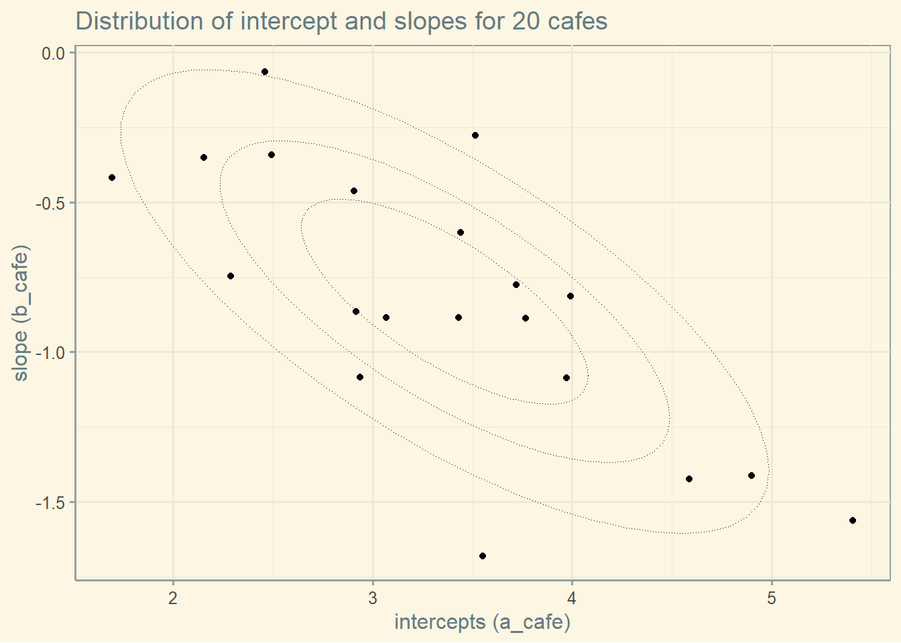
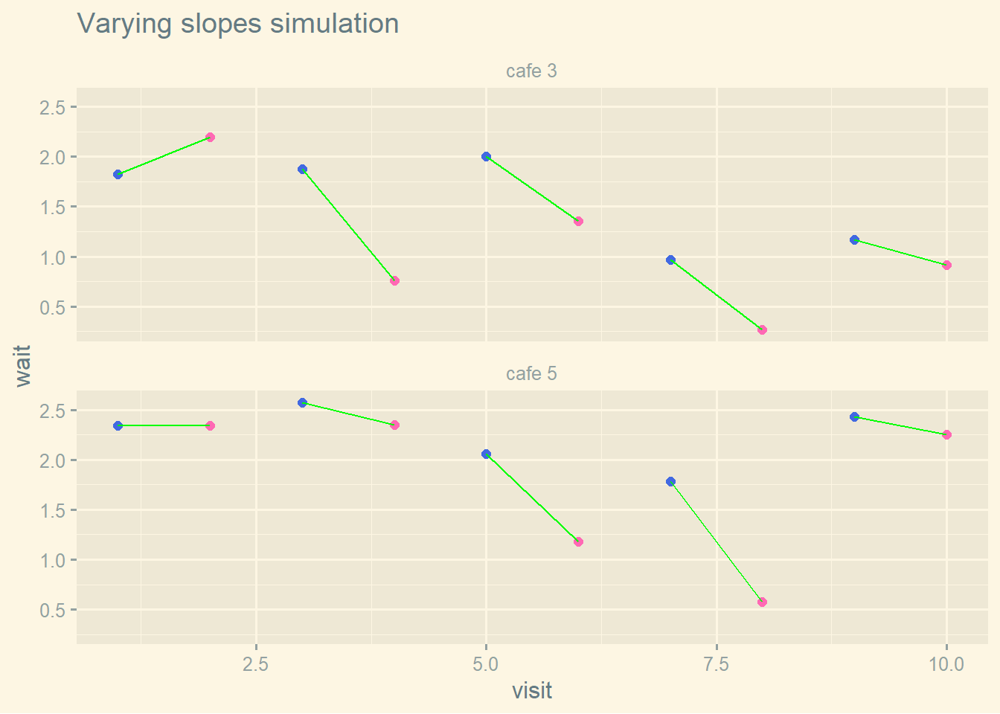

a <- 3.5 # average morning wait time
b <- -1 # average difference afternoon wait time
sigma_a <- 1 # std dev of intercepts
sigma_b <- 0.5 # std dev of slopes
rho_val <- -0.7 # correlation between intercepts and slopes
# these lines simply combines the constants just above
mu <- c(a, b) # vector of means
cov_ab <- sigma_a * sigma_b * rho_val14 Adventures in Covariance
14.1 Varying slopes by construction
14.1.1 Simulate the population
McElrath mentions a difficulty using the matrix function. He misses that there is the argument byrow which resolve this.
# use byrow = TRUE to solve McElrath's issue
matrix(1:4, nrow = 2, ncol = 2, byrow = TRUE) [,1] [,2]
[1,] 1 2
[2,] 3 4we get the covariance matrix sigma as follows
sigmas <- c(sigma_a, sigma_b) # vector of sigmas
rho <- matrix(c(1, rho_val, rho_val, 1), nrow = 2) # matrix of correlation
sigma <- diag(sigmas) %*% rho %*% diag(sigmas)and we simulate the bivariate normal distribution
n_cafes <- 20
set.seed(13)
vary_effects <- MASS::mvrnorm(n = n_cafes, mu = mu, Sigma = sigma) %>%
as_tibble() %>%
rename("a_cafe" = V1,
"b_cafe" = V2) %>%
mutate(cafe = seq_len(n_cafes)) %>%
relocate(cafe, after = 0)Warning: The `x` argument of `as_tibble.matrix()` must have unique column names if
`.name_repair` is omitted as of tibble 2.0.0.
ℹ Using compatibility `.name_repair`.# str(vary_effects)and we plot the simulated data which represents the intercept and slope
ggplot(vary_effects, aes(x = a_cafe, y = b_cafe)) +
geom_point() +
ggthemes::theme_solarized() +
# stat_density2d(aes(color = ..level..)) +
stat_ellipse(type = "norm", level = 0.25, linetype = "dotted", size = 0.25) +
stat_ellipse(type = "norm", level = 0.50, linetype = "dotted", size = 0.25) +
stat_ellipse(type = "norm", level = 0.75, linetype = "dotted", size = 0.25) +
theme(legend.position = "none") +
labs(title = sprintf("Distribution of intercept and slopes for %d cafes", n_cafes),
x = "intercepts (a_cafe)", y = "slope (b_cafe)")Warning: Using `size` aesthetic for lines was deprecated in ggplot2 3.4.0.
ℹ Please use `linewidth` instead.
14.1.2 Simulate the observations (visits by cafe)
Now using the simulated intercepts and slopes, we create the simulated visits to each cafe.
n_visits <- 10 # nb of visits to each cafe by robot
sigma <- 0.5 # std dev within cafes
set.seed(13)
d <- vary_effects %>%
expand(nesting(cafe, a_cafe, b_cafe), visit = seq_len(n_visits)) %>%
mutate(afternoon = rep(0:1, times = n()/2)) %>%
mutate(mu = a_cafe + b_cafe * afternoon) %>%
mutate(wait = rnorm(n = n(), mean = mu, sd = sigma))and plot the simulated observations. We first create dataframe used for plotting
pdf <- d %>%
mutate(afternoon = if_else(afternoon == 0, "M", "A"),
day = rep(rep(1:5, each = 2), times = n_cafes),
cafe = paste("cafe", cafe)) %>%
filter(cafe %in% c("cafe 3", "cafe 5"))
# str(pdf)and we create he plot
ggplot(pdf, aes(x = visit, y = wait, group = day)) +
geom_point(aes(color = afternoon), size = 2) +
geom_line(color = "green") +
scale_color_manual(values = c("M" = "royalblue", "A" = "hotpink")) +
ggthemes::theme_solarized_2() +
theme(legend.position = "none") +
labs(title = "Varying slopes simulation") +
facet_wrap(~ cafe, ncol = 1)
14.1.3 The varying slopes model
14.1.3.1 The model
\[ wait_i \sim \mathcal{N}(\mu_i, \sigma) \\ \mu_i = \alpha_{cafe[i]} + \beta_{cafe[i]} \cdot afternoon_i \\ \begin{bmatrix} \alpha_{cafe} \\ \beta_{cafe} \end{bmatrix} \sim \mathcal{MVNormal}( \begin{bmatrix} \alpha \\ \beta \end{bmatrix} , \textbf{S} ) \\ S= \begin{bmatrix} \sigma_{\alpha} & 0 \\ 0 & \sigma_{\beta} \end{bmatrix} \begin{bmatrix} 1 & \rho \\ \rho & 1 \end{bmatrix} \begin{bmatrix} \sigma_{\alpha} & 0 \\ 0 & \sigma_{\beta} \end{bmatrix} \\ \alpha \sim \mathcal{N}(0, 10) \\ \beta \sim \mathcal{N}(0, 10) \\ \sigma \sim \mathcal{HalfCauchy}(0, 1) \\ \sigma_{\alpha} \sim \mathcal{HalfCauchy}(0, 1) \\ \sigma_{\beta} \sim \mathcal{HalfCauchy}(0, 1) \\ \begin{bmatrix} 1 & \rho \\ \rho & 1 \end{bmatrix} \sim \mathcal{LKJcorr}(K=2, \eta=2) \]